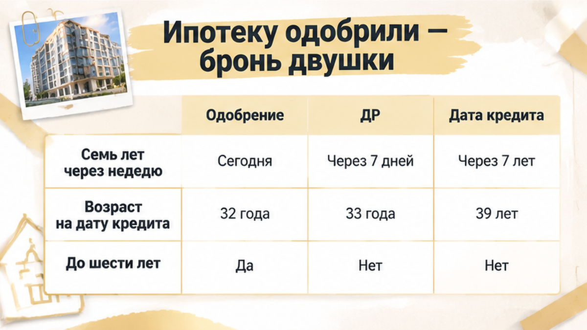
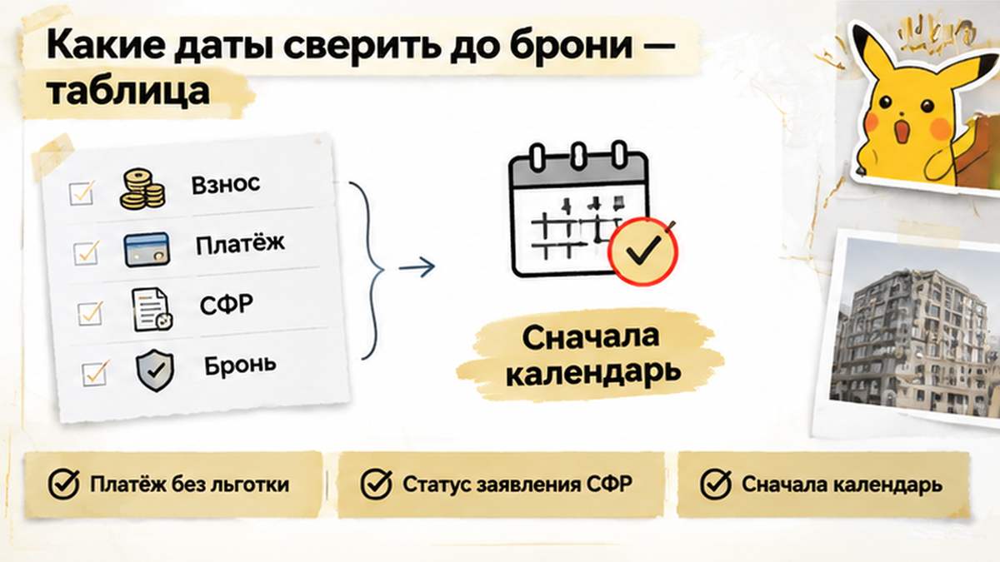

Ребёнку исполнилось 7 лет за девять дней до сделки — и семейная ипотека под 6% превратилась для семьи в платёж на 18 тысяч рублей больше. Двушка в тюменской новостройке уже была забронирована, рядом с календарём на кухне лежали расчёты собственных денег и маткапитала, а банк прислал предварительное одобрение. Родители считали, что осталось только подписать документы и открыть эскроу. Но день рождения оказался между банковским «одобрено» и кредитным договором — и именно эта дата решила судьбу льготной ставки.
Я разбираю такие покупки изнутри — по датам, условиям и деньгам, а не по красивой надписи «ипотека одобрена». Новые разборы публикую в Telegram и MAX.
Сначала всё выглядело как обычная удачная сделка. Семья с одним ребёнком выбрала двушку в новостройке Тюмени и рассчитывала на семейную ипотеку под 6%. В первоначальный взнос собирались вложить собственные накопления и маткапитал, ежемесячный платёж уже был посчитан.
Банк выдал предварительное одобрение. После этого семья забронировала квартиру, а заявление на использование маткапитала передала через банк — тот должен был обменяться документами с Социальным фондом.
Предварительное одобрение не фиксирует все условия сделки навсегда. Перед кредитным договором банк ещё раз проверяет документы и обстоятельства, от которых зависит право на программу. Бронь тоже не превращается в гарантию льготной ставки: она лишь удерживает выбранную квартиру на условиях договора с застройщиком.
Маткапитал в этой цепочке — отдельная история. Поданное заявление не означает, что деньги уже перечислены на первоначальный взнос. Пока Социальный фонд рассматривает документы, семье важно понимать, из каких средств складывается сделка и что произойдёт, если выбранная ипотечная программа не сработает.
Для семейной ипотеки в Тюмени в этих условиях важны и другие цифры: кредит до 6 миллионов рублей, первоначальный взнос от 20%. Но сначала нужно подтвердить право на саму льготную программу, а уже потом считать, хватает ли собственных денег на покупку.
Путь от одобрения до эскроу нельзя считать пройденным после первого положительного ответа банка. В похожих историях семья доходит до офиса застройщика, а затем выясняет, что одобрение не означает открытие эскроу.

На кухонном календаре у семьи стояли две даты. Сначала — седьмой день рождения ребёнка, через девять дней — планируемое подписание ДДУ и открытие эскроу. Когда банк прислал предварительное одобрение, ребёнку ещё не исполнилось семь. Но кредитный договор должен был появиться уже после дня рождения.
Условие «до 6 лет включительно» действует, пока ребёнку не исполнилось семь. Для этой программы возраст смотрят на дату заключения кредитного договора. Не на день подачи заявки, не на дату предварительного одобрения и не на момент бронирования квартиры.
Подписание ДДУ, заключение кредитного договора и открытие эскроу могут происходить почти одновременно, но это разные действия. Для возраста ребёнка решающей остаётся одна дата — день, когда семья заключает кредитный договор с банком.
Здесь важно не спутать причину с другой неприятной развилкой — когда между одобрением и ДДУ меняются условия кредита. В нашем разборе проблема не в том, что банк просто решил предложить ставку повыше: исчезает возрастное основание для семейной ипотеки. Поэтому перед поездкой в офис застройщика нужно получить от банка ответ не о сроке действия одобрения, а о возможности заключить льготный кредитный договор в назначенный день.
На финальной сверке банк смотрит не только на доходы родителей и документы на квартиру. Ему нужно ещё раз проверить, есть ли у семьи право именно на ту программу, по которой собираются подписывать кредитный договор. И здесь обнаруживается главное: ребёнку уже исполнилось семь лет.
Для родителей разница между предварительным ответом и окончательной проверкой кажется почти технической. Квартира выбрана, документы собраны, менеджер застройщика ждёт в офисе. В голове уже стоит галочка: «ипотеку одобрили». Но к моменту подписания обстоятельства изменились, а прежний ответ банка не «заморозил» возраст ребёнка.
В семье один ребёнок без инвалидности, другого основания для льготного кредита в этих исходных данных нет. Вариант для семей с двумя несовершеннолетними детьми тоже не подходит. А основание для покупки новостройки по такому сценарию в Тюмени дополнительно связано с перечнем из 35 регионов, куда Тюменская область не входит.
Поэтому просьба «оставьте нам прежнее одобрение, мы уже всё забронировали» не решает вопрос. Одобрение не заменяет кредитный договор и не обязывает банк выдать кредит на условиях, которым семья больше не соответствует.
На финальном этапе банк приостанавливает выдачу кредита и открытие эскроу по семейной программе. Дальше остаётся считать запасной вариант: другую ипотеку, другой первоначальный взнос и другой ежемесячный платёж.
В первоначальном взносе у семьи были собственные деньги и маткапитал. Заявление на распоряжение сертификатом уже подали через банк, поэтому остановка ипотеки выглядела ещё тревожнее: если сделка не состоится, что будет с этими деньгами?
Здесь важно разделить две истории. Возраст ребёнка оказался критичным для семейной ипотеки, но седьмой день рождения сам по себе не отменяет право на маткапитал. Его можно направить на первоначальный взнос по ипотеке сразу после рождения ребёнка. Ограничение «до 6 лет включительно» относится к основанию для льготного кредита, а не к самому сертификату.
В этой сделке проблема возникла в другом: льготный кредит на прежних условиях не заключается. Поэтому заявление, поданное под конкретную ипотечную покупку, может быть отозвано или остаться неисполненным. Это не означает, что сертификат исчез или деньги сгорели.
У заявления есть собственный календарь. Социальный фонд рассматривает его до пяти рабочих дней, а если потребуются межведомственные запросы — до двенадцати. После решения на перечисление средств отводится ещё пять рабочих дней.
Подача заявления через банк не превращает этот процесс в мгновенный перевод. Поэтому нужно отдельно узнать, на каком этапе находится заявление: документы отправлены, решение принято или деньги уже перечислены. Сам факт подачи ещё ничего из этого не подтверждает.
Если пересчитать покупку без маткапитала в первоначальном взносе, меняется не только размер будущего платежа. Собственных накоплений может не хватить: по семейной программе первоначальный взнос начинается от 20%, а требования к запасному кредиту нужно уточнять отдельно.
Нужно разбирать два вопроса: что произойдёт с уже поданным заявлением и из каких денег теперь складывается первоначальный взнос. Остановка конкретной сделки не означает, что маткапитал больше нельзя использовать после семилетия ребёнка.
Застройщик дал семье пять дней на смену кредитной программы. Это был срок именно по этой сделке, а не обещание держать квартиру сколько угодно.

Новый расчёт оказался жёстким: ежемесячный платёж вырос на 18 тысяч рублей. Двушка уже не помещалась в привычный бюджет. Подписывать ДДУ на таких условиях семья не стала. Через три дня бронь сняли, эскроу так и не открыли, деньги на него не ушли.
Квартиру удержать не получилось. Зато покупатели сами остановили сделку и не подписали договор в надежде, что кредит как-нибудь сложится позже. Сохранение брони не стало для них причиной взять на себя неподъёмный платёж.
С деньгами за бронь вопрос отдельный: их возврат зависит от текста договора бронирования. Бронь и деньги на покупку квартиры — это разные платежи с разными условиями. Похожий разрыв на финише бывает, когда одобрение не закрыло сделку: там другая причина, но граница та же — до перечисления денег нужна финальная проверка.
Кто должен следить за возрастным порогом между одобрением и кредитным договором — семья или банк, который уже одобрил ипотеку?
В такой покупке я бы начинал не с выбора свободной двушки, а с календаря. В нём должны стоять день рождения ребёнка, предполагаемая дата кредитного договора и последний день брони. Сопоставить их нужно до того, как покупатели начнут опираться на предварительное одобрение в договорённостях с застройщиком.

| Дата или срок | Что подтверждает | Чего не гарантирует |
|---|---|---|
| Предварительное одобрение банка | Банк предварительно согласовал заявку. | Возраст ребёнка не фиксируется навсегда на этот день. Перед сделкой будет финальная сверка. |
| Заключение кредитного договора | Именно на эту дату определяется возраст ребёнка для основания «до 6 лет включительно». | Если ребёнку уже семь, прежнее одобрение не сохраняет право на семейные 6% по этому основанию. |
| Окончание брони | До какого срока действуют договорённости о бронировании квартиры. | Бронь не закрепляет льготную ставку и не обязывает банк выдать кредит. |
| Подача заявления на маткапитал | Начало отдельного рассмотрения распоряжения средствами. | Заявление не заменяет кредитный договор и не означает, что деньги уже перечислены. |
Срок рассмотрения заявления и срок брони нужно проверять отдельно. Ожидание ответа Социального фонда не даёт само по себе гарантии, что застройщик продолжит удерживать выбранную квартиру.

Поэтому перед продлением брони нужно узнать через банк статус уже поданного заявления. В разборе цепочки ДДУ и эскроу на новостройке важна та же граница: согласованная заявка ещё не означает, что все деньги готовы к сделке.
Запасной расчёт стоит сделать до бронирования. Сколько собственных средств доступно для первоначального взноса? Какой будет платёж без семейной программы? Устраивает ли семью этот бюджет, если льготный вариант окажется недоступен?
Больше разборов покупки новостроек Тюмени — в моих Telegram и MAX. Разбираю, где между одобрением и подписанием ещё нужно остановиться и проверить условия.
Управлять такой покупкой — не значит просить банк закрыть глаза на дату рождения. Это значит до передачи денег проверить сроки и условия, а затем честно решить, подходит ли запасной вариант. Отказ от сделки тоже остаётся выбором покупателя, даже когда квартира уже забронирована.